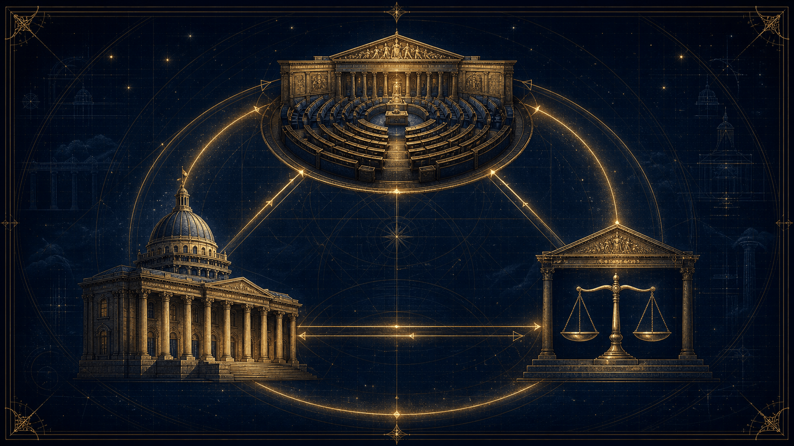

Le grand décryptage : municipales, quatre blocs à l'Assemblée, financement des campagnes, 49.3, institutions de la Ve République — et, en seconde partie, le clivage gauche-droite. Pourquoi votre bulletin a plus de pouvoir que vous ne le pensez.
Quand personne n'a la majorité, votre bulletin pèse double.
Ce dossier reprend mot pour mot le live « Comprendre la politique française en 2026 », puis, en seconde partie, l'explication du clivage gauche-droite. Une boussole pour s'y retrouver entre municipales, 49.3, quatre blocs et Sénat.
Élections municipales : le grand test électoral de l'année.
Sénatoriales : les maires élus deviennent « grands électeurs ».
La course à l'Élysée, déjà lancée en coulisses.
Objectifs pédagogiques
Décoder la vie politique sans se faire avoir par les petites phrases.
Comprendre
Le rôle du vote, des institutions et des contre-pouvoirs de la Ve République, du maire au Conseil constitutionnel.
Vérifier
Distinguer le « bruit » du projet : lire un programme, suivre les votes réels à l'Assemblée, repérer les fake news.
Situer
Lire le paysage des partis et le clivage gauche-droite — un repère utile, mais jamais une carte complète du réel.
Le script du live
« C'est parti pour le grand décryptage. »
01
Au micro
« Salut à toutes et à tous ! Bienvenue dans ce live spécial. On est en mars 2026, et si vous avez ouvert vos boîtes aux lettres ou regardé la télé ces derniers jours, vous savez qu'on est en pleine ébullition. Dimanche, c'est le deuxième tour des élections municipales.
Mais au-delà de choisir qui va gérer votre ville, ce qui se joue en ce moment, c'est le futur visage de la France. Entre une Assemblée nationale bloquée par quatre blocs qui s'affrontent, un budget 2026 qui vient de passer de justesse au 49.3, et la course pour l'Élysée 2027 qui est déjà lancée... il y a de quoi être perdu.
Ce soir, on va tout remettre à plat : Qui sont les vraies forces en présence ? Comment fonctionne notre démocratie quand personne n'est d'accord ? Et surtout, pourquoi votre bulletin de vote de dimanche a beaucoup plus de pouvoir que vous ne le pensez. C'est parti pour le grand décryptage ! »
Élections municipales 2026
Pourquoi votre bulletin compte.
02
C'est une question fondamentale, surtout en ce mois de mars 2026. Voter n'est pas seulement un devoir civique « théorique », c'est un outil d'influence très concret sur votre vie et sur l'équilibre du pays.
Voici les trois raisons majeures pour lesquelles votre bulletin de vote compte aujourd'hui :
1. Décider de votre « Quotidien Immédiat »
Les élections municipales sont celles qui impactent le plus directement votre environnement. En votant les 15 et 22 mars, vous choisissez l'équipe qui décidera pendant 6 ans :
De la sécurité : Création d'une police municipale ou installation de caméras.
De l'éducation : Rénovation des écoles et prix de la cantine (bio, locale, etc.).
De l'écologie : Création de pistes cyclables, gestion des déchets et des espaces verts.
De l'urbanisme : Construction de nouveaux logements ou protection du patrimoine.
L'impact : Si vous ne votez pas, vous laissez vos voisins décider pour vous de la couleur de votre rue et de l'avenir de votre quartier.
2. Agir sur le « Grand Équilibre » National
Comme nous l'avons vu précédemment, la France vit une crise politique depuis 2024 avec une Assemblée nationale bloquée.
Le Sénat : En élisant vos conseillers municipaux ce mois-ci, vous désignez indirectement les Grands Électeurs qui choisiront les sénateurs en septembre 2026.
Le contre-pouvoir : Le Sénat est le seul capable de bloquer ou de modifier sérieusement les projets du Gouvernement. Voter aux municipales, c'est donc aussi donner (ou retirer) du pouvoir au camp d'Emmanuel Macron au niveau national.
3. Lutter contre l'Abstention et la « Crise de Légitimité »
En 2026, la défiance envers les politiques est forte. Certains pensent que « voter ne change rien ». Pourtant :
Le poids du silence : L'abstention profite souvent aux partis les mieux organisés et aux candidats sortants.
La légitimité : Un maire élu avec 30 % de participation a moins de force pour négocier avec l'État ou la Métropole qu'un maire élu avec une forte mobilisation.
Le signal : Un vote massif est un message envoyé au pouvoir central sur les attentes réelles des Français (pouvoir d'achat, services publics, environnement).
Un changement important en 2026
Pour ces élections, une nouvelle loi s'applique : dans toutes les communes (même celles de moins de 1 000 habitants), on vote désormais par liste paritaire. Vous ne pouvez plus rayer de noms. C'est une simplification qui vise à rendre le vote plus clair et plus représentatif.
En résumé : Voter, c'est choisir le pilote de votre ville et influencer le contre-poids du gouvernement à Paris.
Lire un programme politique
Surtout pour les municipales des 15 et 22 mars 2026, est bien plus qu'une simple formalité : c'est le seul moyen de passer de l'image médiatique d'un candidat à la réalité de ce qu'il fera de vos impôts et de votre ville.
Voici pourquoi c'est une étape cruciale pour votre vote :
1. Distinguer le « Bruit » du « Projet »
À la télévision ou sur les réseaux sociaux, les candidats s'expriment souvent par petites phrases chocs. Le programme (ou profession de foi) est le document où ils sont obligés de poser une vision cohérente pour les 6 prochaines années.
Le programme, c'est le contrat : C'est le document de référence sur lequel vous pourrez les interpeller s'ils ne respectent pas leurs engagements une fois élus.
2. Vérifier la faisabilité : « Qui paye quoi ? »
Un programme sérieux ne se contente pas de promettre une nouvelle piscine ou des bus gratuits. Il doit expliquer son financement.
L'argent : Si une liste propose d'énormes travaux sans expliquer s'ils seront financés par l'emprunt, par une hausse des impôts locaux ou par des économies ailleurs, c'est un signal d'alerte.
Les compétences : La mairie ne peut pas tout faire. Lire le programme permet de vérifier si le candidat ne promet pas des choses qui dépendent de l'État ou de la Région (comme changer les programmes scolaires ou baisser la TVA).
3. Mesurer l'impact sur votre vie quotidienne
Aux municipales, le programme touche à votre rue, votre quartier, votre immeuble. En le lisant, vous découvrez des choix très concrets :
Priorité à la voiture ou aux vélos ? (Aménagement des voiries)
Construction de nouveaux logements ou préservation des espaces verts ? (Urbanisme)
Sécurité : Développement d'une police municipale armée ou médiation sociale ?
4. Détecter les « Fake News » et les manipulations
En 2026, l'Arcom (le régulateur des médias) et de nombreuses associations alertent sur la manipulation de l'information, particulièrement sur les réseaux sociaux. Lire le programme officiel envoyé par la préfecture est le meilleur moyen de vérifier si ce que vous avez lu sur Internet est vrai ou s'il s'agit d'une rumeur.
Comment bien lire un programme ?
Regardez les chiffres : Sont-ils précis ?
Cherchez le calendrier : Quand ces projets seront-ils réalisés ?
Comparez les priorités : Quel est le premier sujet abordé ? (C'est souvent ce qui définit le candidat).
Bon à savoir : Depuis 2022, les candidats ont l'obligation de fournir une version FALC (Facile à Lire et à Comprendre) de leur programme, pour rendre les idées accessibles à tous, y compris aux personnes en situation de handicap ou ayant des difficultés de lecture.
A. La Procuration : Voter à distance
Pour clore notre tour d'horizon, voici comment gérer votre vote si vous ne pouvez pas vous déplacer ou si aucun candidat ne vous convainc.
La procuration permet de confier son vote à un autre électeur (le mandataire).
Qui peut être mandataire ? N'importe quel électeur inscrit sur une liste électorale (même s'il habite une autre commune). Attention : il devra se rendre dans votre bureau de vote pour voter à votre place.
Les limites : Un mandataire ne peut porter qu'une seule procuration établie en France.
Comment faire ? En ligne (100 % dématérialisé) : Si vous avez une Identité Numérique certifiée (via l'application France Identité), vous pouvez tout faire sur maprocuration.gouv.fr sans bouger de chez vous.
Classique : Remplissez le formulaire en ligne, puis rendez-vous au commissariat, en gendarmerie ou au tribunal pour valider votre identité.
Délai : Faites-le le plus tôt possible ! Même si la loi n'impose pas de date limite, il faut que la mairie reçoive le document avant le dimanche matin.
Vérifier, pas seulement croire
Le carnet de vote & le bulletin blanc.
03
Les programmes sont des promesses, mais les votes sont des actes. Regarder comment les partis se sont comportés à l'Assemblée nationale ou au Sénat est le meilleur moyen de vérifier la cohérence entre ce qu'ils disent et ce qu'ils font réellement.
En mars 2026, avec une Assemblée toujours fragmentée, chaque vote compte double. Voici comment vous pouvez analyser ce « bilan législatif » :
1. Pourquoi est-ce plus fiable que le programme ?
Le programme est un exercice de communication souvent idéaliste. Le vote, lui, oblige à choisir un camp sous la contrainte de la réalité :
La discipline de vote : En France, les députés votent presque toujours comme leur groupe politique. En regardant le vote du groupe, vous voyez la vraie ligne du parti.
Le compromis : Un parti peut promettre « plus d'écologie », mais voter contre une loi climat parce qu'il juge qu'elle ne va pas assez loin, ou l'inverse. C'est dans le détail des amendements que l'on voit les vraies priorités.
2. Comment consulter ces votes ?
Le citoyen dispose d'outils numériques très puissants pour « fliquer » ses élus (dans le bon sens du terme) :
Datan.fr : C'est sans doute l'outil le plus accessible en 2026. Il décrypte les votes complexes en les classant par thèmes (économie, social, environnement) et montre si votre député a suivi la ligne de son parti ou non.
NosDéputés.fr / NosSénateurs.fr : Ces observatoires citoyens listent l'activité complète : présence en commission, nombre d'amendements déposés et, bien sûr, les votes solennels.
Le site de l'Assemblée nationale : Plus technique, il publie tous les « Scrutins publics » avec le détail nom par nom. On y voit qui a voté « Pour », « Contre » ou qui s'est « Abstenu ».
3. Les votes clés à regarder en ce début 2026
Pour vous faire une idée avant les municipales et les futures échéances, voici ce qui a fait débat récemment :
Le Budget 2026 : Qui a voté les coupes budgétaires ? Qui a proposé des taxes sur les super-profits ?
La Loi sur la Fin de Vie : Un vote de conscience où les groupes politiques ont parfois été divisés.
Les motions de censure : Qui a tenté de renverser le gouvernement récemment ? Cela montre qui est dans l'opposition frontale et qui est dans une opposition constructive.
4. Attention aux « pièges » du vote
Il faut parfois être prudent dans l'interprétation :
L'abstention tactique : Parfois, un parti s'abstient non pas parce qu'il n'a pas d'avis, mais pour laisser passer une loi sans l'approuver officiellement (souvent pour éviter une crise politique).
Le vote contre par stratégie : Un parti peut voter contre une loi dont il approuve l'idée, simplement parce que le texte est porté par son adversaire principal.
Conclusion : Si le programme est la « carte d'identité » d'un candidat, son carnet de vote est son « casier judiciaire » (ou son « tableau d'honneur »). Les deux sont indispensables pour se faire une opinion complète.
B. Vote Blanc vs Vote Nul : Quelle différence ?
On confond souvent les deux, mais leur sens politique est très différent.
Deux gestes, deux significations très différentes.
Type de vote
Comment faire ?
Signification
Vote Blanc
Une enveloppe vide OU un bulletin blanc vierge.
« Je participe au vote, mais aucun candidat ne me convient. »
Vote Nul
Bulletin déchiré, annoté, griffonné, ou plusieurs bulletins différents dans la même enveloppe.
Souvent une erreur de manipulation ou une protestation « hors-sujet ».
Le décompte : Depuis 2014, les votes blancs sont décomptés séparément des votes nuls et apparaissent officiellement dans les résultats.
L'impact réel : Malgré ce décompte, le vote blanc ne compte pas dans les « suffrages exprimés ».
Exemple : Si un candidat obtient 51 % des voix et qu'il y a 10 % de votes blancs, il est élu dès le premier tour. Le vote blanc n'augmente pas le seuil nécessaire pour gagner.
Pourquoi voter blanc plutôt que de s'abstenir ?
L'abstention est souvent interprétée comme de l'indifférence ou un oubli. Le vote blanc, lui, est un geste civique fort : vous avez fait l'effort de vous déplacer pour dire qu'aucune offre politique actuelle ne vous satisfait. C'est un message direct envoyé aux partis pour qu'ils fassent évoluer leurs programmes.
Le vote blanc est souvent perçu comme « peu pris en compte » parce qu'il occupe une place ambiguë dans le droit électoral français : il est comptabilisé, mais il n'est pas exprimé.
Voici les raisons précises de cette situation et les enjeux que cela soulève :
1. La distinction entre « votants » et « suffrages exprimés »
C'est le point technique majeur qui explique pourquoi le vote blanc ne change pas le résultat d'une élection :
Les votants : Ce sont toutes les personnes qui ont glissé une enveloppe dans l'urne.
Les suffrages exprimés : Ce sont uniquement les votes qui se sont portés sur un candidat ou une liste.
Le calcul : Pour être élu, un candidat doit obtenir la majorité des suffrages exprimés. Comme le vote blanc n'en fait pas partie, il n'augmente pas le nombre de voix nécessaires pour gagner.
Exemple : Si sur 100 votants, 40 votent blanc, le candidat qui obtient 31 voix sur les 60 restantes est élu avec la majorité absolue (plus de 50 % des exprimés), même s'il ne représente que 31 % des gens qui se sont déplacés.
2. Une reconnaissance purement symbolique
Depuis une loi de 2014, les votes blancs sont décomptés séparément des votes nuls et apparaissent dans les résultats officiels. C'est une avancée, car cela permet de mesurer le mécontentement. Cependant, cette reconnaissance reste symbolique car elle n'a aucun impact juridique sur l'élection. Le vote blanc est considéré comme un comportement électoral à part entière, au même titre que l'abstention.
3. Les arguments contre une prise en compte totale
Si le vote blanc était considéré comme un suffrage exprimé, cela pourrait bloquer les institutions :
Le risque d'élection invalide : Si le vote blanc arrivait en tête (par exemple 55 % des voix), aucun candidat n'aurait la majorité. Il faudrait alors annuler l'élection et en réorganiser une nouvelle, ce qui pourrait mener à une instabilité permanente si les électeurs continuent de voter blanc.
La difficulté de gouverner : Le système français (Ve République) est conçu pour dégager une majorité claire afin de pouvoir diriger le pays. Prendre en compte le vote blanc comme un suffrage exprimé rendrait l'obtention de cette majorité beaucoup plus difficile.
4. Un débat politique permanent
En 2026, comme lors des scrutins précédents, de nombreux citoyens et responsables politiques demandent que le vote blanc soit reconnu comme un suffrage exprimé. L'objectif serait de :
Mieux prendre en compte les aspirations des électeurs qui ne se reconnaissent dans aucune offre.
Réduire l'abstention en donnant une utilité réelle au geste de se déplacer pour dire « non » à tous les candidats.
En résumé : Le vote blanc est un message politique de mécontentement, mais pour l'instant, le législateur a choisi de privilégier l'efficacité de l'élection (désigner un vainqueur) plutôt que la représentativité du refus.
Le visage politique en France
Quatre blocs, aucune majorité.
04
Le paysage politique français en mars 2026 est marqué par une fragmentation inédite de l'Assemblée nationale, issue des législatives de 2024, et par la préparation intensive des élections municipales qui se tiennent ce mois-ci.
Voici les grandes lignes pour comprendre la situation actuelle :
On a une représentation visuelle du paysage politique français en mars 2026, structuré autour des quatre grands blocs qui composent l'Assemblée nationale depuis les législatives de 2024. Ce schéma met en évidence la tripartition (ou quadripartition, selon le rôle charnière de la droite LR) du Parlement, où aucune force ne détient la majorité absolue de 289 sièges.
[Image d'un schéma ou infographie montrant les partis politiques français divisés en quatre grands blocs : Nouveau Front Populaire, Ensemble, La Droite Républicaine, Rassemblement National, avec leurs logos et nombre de sièges approximatifs.]
Comment lire ce schéma ?
Le paysage est fracturé en blocs qui s'opposent ou négocient au coup par coup :
Le Nouveau Front Populaire (NFP)
Gauche
C'est la coalition de gauche la plus nombreuse (environ 193 députés), mais elle reste en deçà de la majorité absolue. Elle rassemble LFI, le PS, Les Écologistes et le PCF.
Ensemble pour la République
Centre
C'est le bloc central (ex-majorité présidentielle) avec environ 160 députés. Il soutient l'action du gouvernement mais doit composer avec les autres forces.
La Droite Républicaine (LR)
Droite
Avec une cinquantaine de sièges, ce groupe joue souvent le rôle de « faiseur de rois » pour valider certains textes, notamment le budget, ou pour éviter une motion de censure.
Le Rassemblement National (RN) et ses alliés
Extrême droite
Avec environ 140 députés (dont l'UDR d'Éric Ciotti), c'est le premier groupe d'opposition unique, très puissant mais isolé à l'Assemblée.
Pourquoi cette image est-elle cruciale en 2026 ?
Cette configuration inédite depuis 2024 explique l'instabilité politique et l'utilisation fréquente d'outils comme le 49.3 par le gouvernement pour faire passer ses lois sans vote, faute de majorité assurée. C'est également ce paysage fracturé qui se projette dans les élections municipales de ce mois-ci, où chaque bloc tente de conquérir des mairies pour renforcer son ancrage local avant les sénatoriales de septembre.
Pour bien comprendre le paysage politique de 2026, il faut regarder le détail de chaque bloc. Voici un « zoom » sur les forces en présence, de la gauche à l'extrême droite.
1. Le Bloc de Gauche : Le Nouveau Front Populaire (NFP)
C'est une alliance électorale qui regroupe quatre partis principaux. Bien qu'unis pour les élections, ils gardent des sensibilités différentes :
La France Insoumise (LFI) : Le pôle le plus radical. Porté par les idées de rupture, il se concentre sur la VIe République, la planification écologique et la taxation des super-profits.
Le Parti Socialiste (PS) : La force sociale-démocrate. Il prône une gauche de gouvernement, pro-européenne, très attachée aux services publics.
Les Écologistes (EELV) : Leur priorité est la transition climatique, la protection de la biodiversité et une économie plus sobre.
Le Parti Communiste Français (PCF) : Très axé sur la défense du monde ouvrier, la souveraineté industrielle et l'énergie nucléaire.
2. Le Bloc Central : Ensemble pour la République
C'est le socle qui soutient l'action du président Emmanuel Macron. Il est composé de trois piliers :
Renaissance (ex-LREM) : Le parti présidentiel, libéral sur l'économie et progressiste sur les questions de société.
Le MoDem : Le parti de François Bayrou. Il insiste sur le dialogue entre les blocs et la décentralisation.
Horizons : Fondé par Édouard Philippe. Il prépare activement l'après-Macron avec une ligne plus ferme sur la sécurité et le sérieux budgétaire.
3. Le Bloc de Droite : La Droite Républicaine (LR)
Héritiers du général de Gaulle et de Nicolas Sarkozy, ils sont dans une position charnière en 2026.
Ils refusent de s'allier officiellement au camp Macron mais votent parfois avec lui pour éviter de bloquer le pays.
Leurs priorités : Réduction drastique de la dépense publique, fermeté sur l'immigration et soutien aux entreprises.
4. Le Bloc d'Extrême Droite : Le Rassemblement National et ses alliés
C'est le bloc qui a le plus progressé en nombre de députés depuis 2024.
Le Rassemblement National (RN) : Mené par Marine Le Pen et Jordan Bardella, il mise sur la « priorité nationale », le pouvoir d'achat et la lutte contre l'insécurité pour se présenter comme l'alternative de gouvernement.
L'UDR : Le groupe d'Éric Ciotti qui a rompu avec LR pour s'allier directement au RN.
Reconquête ! : Le parti d'Éric Zemmour, plus radical sur l'identité, mais moins influent à l'Assemblée nationale que le RN.
Récapitulatif : Les rapports de force
Quatre blocs, quatre revendications phares en 2026.
Bloc
Tendance
Principale revendication en 2026
NFP (Gauche)
Rupture / Social
Abrogation de la réforme des retraites
Ensemble (Centre)
Libéral / Européen
Poursuite des réformes de compétitivité
LR (Droite)
Conservateur
Rigueur budgétaire stricte
RN (Extrême Droite)
Nationaliste
Maîtrise totale de l'immigration
Les « petits » partis, souvent influents
Si les « quatre grands blocs » dominent l'Assemblée nationale en 2026, la vie politique française est riche de dizaines de partis plus petits. Certains n'ont aucun député mais des milliers d'élus locaux (maires, conseillers), tandis que d'autres servent de « satellites » aux grands partis.
Voici un tour d'horizon des forces plus discrètes mais souvent influentes :
1. La « Galaxie » Souverainiste et d'Extrême Droite
À côté du RN de Marine Le Pen, d'autres mouvements défendent une ligne très nationale :
Debout la France (DLF) : Le parti de Nicolas Dupont-Aignan. Il prône une sortie de l'euro ou une Europe des nations très libre.
Les Patriotes : Mené par Florian Philippot, ce parti est le fer de lance du « Frexit » (sortie de la France de l'Union européenne).
Reconquête ! : Le parti d'Éric Zemmour. Bien qu'il ait eu un fort écho médiatique, il peine en 2026 à transformer ses scores en sièges de députés, mais reste actif sur les réseaux sociaux.
2. L'Extrême Gauche « Rupturiste »
Ils refusent souvent les alliances avec le PS ou les Écologistes, jugeant le Nouveau Front Populaire trop « mou » :
Lutte Ouvrière (LO) : Mené par Nathalie Arthaud, c'est le parti des travailleurs. Ils sont présents à chaque élection pour porter la voix de la lutte des classes.
Nouveau Parti Anticapitaliste (NPA) : Divisé en plusieurs branches, il prône une révolution sociale et la fin du système capitaliste.
3. Les Partis de « Niche » ou Thématiques
Ils se concentrent sur un sujet précis, ce qui leur permet de capter un électorat très fidèle :
Résistons ! : Le parti de Jean Lassalle. Très axé sur la défense du monde rural, des bergers et de la « France d'en bas ».
Le Parti Animaliste : Il ne parle que d'une chose : la condition animale. Il obtient souvent des scores surprenants (autour de 2-3 %) aux élections européennes.
L'Union Populaire Républicaine (UPR) : Le parti de François Asselineau, focalisé quasi exclusivement sur la sortie de l'UE, de l'Euro et de l'OTAN.
4. Les Partis Régionalistes
En 2026, ils sont de plus en plus écoutés, notamment au Parlement via le groupe LIOT (Libertés, Indépendants, Outre-mer et Territoires) :
Femu a Corsica : Les autonomistes corses.
UDB (Union Démocratique Bretonne) : Pour plus d'autonomie en Bretagne.
Partis Ultra-marins : Très puissants en Guadeloupe, Martinique ou à la Réunion, ils sont souvent les alliés indispensables pour former une majorité à Paris.
Pourquoi ces « petits » partis sont-ils importants ?
Le rôle de « Faiseur de rois » : À l'Assemblée, le petit groupe LIOT (environ 20 députés) peut faire basculer un vote ou une motion de censure car il n'appartient à aucun des quatre grands blocs.
Le financement : En France, chaque voix obtenue aux législatives rapporte de l'argent public au parti. Même un petit parti qui fait 1 % peut ainsi financer son existence.
Les idées : Des thèmes comme l'écologie radicale ou la cause animale ont d'abord été portés par de « petits » partis avant d'être récupérés par les grands.
Le nerf de la guerre
L'argent & les règles du jeu.
05
Le financement, parlons-en. C'est le nerf de la guerre. En France, le financement des campagnes est extrêmement encadré pour éviter que l'argent ne devienne le seul critère de victoire (contrairement aux États-Unis, par exemple).
Voici comment on passe de simple citoyen à candidat, et comment on paye l'addition.
1. Qui peut se présenter ?
En théorie, presque tout le monde. Les conditions de base sont simples :
Être de nationalité française.
Avoir 18 ans révolus.
Jouir de ses droits civils et politiques (ne pas avoir été condamné à une peine d'inéligibilité par un juge).
Être inscrit sur les listes électorales.
Le verrou des « 500 signatures » : Pour l'élection présidentielle uniquement, il faut recueillir le parrainage de 500 élus (maires, députés, sénateurs) issus d'au moins 30 départements différents. C'est le filtre qui empêche les candidatures « fantaisistes ».
2. Comment finance-t-on une campagne ?
En France, le financement est hybride : un mélange d'argent privé (très limité) et d'argent public (remboursement).
A. Les recettes (L'argent qui rentre)
L'apport personnel : Le candidat utilise ses propres économies ou contracte un prêt bancaire à son nom.
Les dons des particuliers : Un citoyen peut donner au maximum 4 600 € par élection.
L'aide du parti : Le parti politique du candidat peut verser des fonds.
INTERDICTION : Les entreprises (personnes morales) ont l'interdiction totale de donner de l'argent à un candidat. Seules les personnes physiques peuvent le faire.
B. Le plafonnement (La limite à ne pas dépasser)
Pour garantir l'équité, la loi fixe un plafond de dépenses que le candidat ne doit jamais dépasser.
Exemple : Pour la présidentielle, le plafond est d'environ 22,5 millions d'euros pour le second tour. Si vous dépassez d'un euro, votre élection peut être annulée.
C. Le remboursement par l'État
C'est la règle d'or : si un candidat obtient plus de 5 % des voix, l'État lui rembourse environ 47 % du plafond de dépenses.
Le piège : Si le candidat fait moins de 5 %, le remboursement tombe à presque rien (environ 4,7 %). C'est souvent la faillite personnelle ou celle du petit parti.
3. Les démarches concrètes
Si vous décidez de vous présenter aux législatives ou aux municipales de 2026, voici le parcours :
Déclaration de candidature : Il faut déposer un dossier à la Préfecture.
Mandataire financier : C'est obligatoire. Vous devez nommer une personne (ou une association) qui gérera l'argent. Le candidat ne peut pas toucher l'argent lui-même.
Le Compte de Campagne : Toutes les factures (impression des tracts, location de salle, publicités autorisées) doivent passer par un compte bancaire unique.
Validation : Après l'élection, la CNCCFP (Commission nationale des comptes de campagne) épluche chaque facture. Si elle valide, l'État rembourse. Si elle rejette, le candidat perd son remboursement et peut être déclaré inéligible.
4. Pourquoi est-ce important en 2026 ?
Avec les municipales de ce mois-ci, beaucoup de candidats de « petits » partis prennent un gros risque financier. S'ils ne franchissent pas la barre des 5 %, ils devront rembourser leurs dettes de campagne sur leurs propres deniers.
C'est aussi pour cela que l'on voit beaucoup de fusions de listes entre les deux tours : on partage les frais et on s'assure de dépasser les seuils de remboursement.
La publicité politique, strictement réglementée
En France, la publicité politique est strictement réglementée pour éviter que l'élection ne devienne un concours de moyens financiers. En mars 2026, pour les municipales, ces règles sont appliquées avec une rigueur particulière.
Voici pourquoi vous ne voyez pas de « pubs » politiques comme pour des yaourts ou des voitures :
1. L'interdiction de la publicité commerciale
Depuis le 1er septembre 2025 (soit 6 mois avant le scrutin), il est formellement interdit d'utiliser des procédés de publicité commerciale à des fins de propagande électorale.
Pas de publicités à la télé ou à la radio : Contrairement aux États-Unis, un candidat ne peut pas acheter un spot de 30 secondes sur TF1 ou RTL.
Pas de publicités dans les journaux : On ne peut pas acheter une page entière dans Le Monde ou Le Figaro pour son programme.
Pas de publicité sur Internet : Il est interdit de « sponsoriser » des publications sur Facebook, Instagram ou TikTok, ou d'acheter des bannières publicitaires (Google Ads) pour promouvoir sa candidature.
2. L'affichage : Uniquement sur les panneaux officiels
L'affichage sauvage est interdit. La loi impose l'égalité :
Les panneaux électoraux : La mairie installe des panneaux devant chaque bureau de vote. Chaque candidat a droit à la même surface exacte.
L'interdiction des vitrines : Un candidat ne peut même pas recouvrir entièrement la vitrine de son local de campagne avec des affiches de programme ou des slogans. Seules les informations factuelles (nom du candidat, heures d'ouverture) sont tolérées.
3. La communication des mairies « gelée »
Pour éviter qu'un maire sortant n'utilise l'argent de la ville pour se faire réélire :
Pas de promotion du bilan : Six mois avant l'élection, la mairie ne peut plus publier de brochures vantant « les grandes réussites de la ville ».
Neutralité des réseaux sociaux : Les comptes officiels de la ville (X, Facebook) doivent se contenter d'informations purement pratiques (travaux, météo, état civil).
Puisque la publicité est interdite, l'État organise lui-même la diffusion des idées :
La « Profession de foi » : C'est le feuillet que vous recevez chez vous par courrier. Sa taille et son poids sont réglementés au millimètre près.
Le bulletin de vote : Imprimé par le candidat, il doit respecter des normes strictes de papier et de couleur.
Les réseaux sociaux (non payants) : Un candidat peut poster autant de vidéos ou de messages qu'il veut sur son profil personnel, tant qu'il ne paye pas la plateforme pour diffuser son message à plus de gens.
Pourquoi ces règles ?
L'idée est de garantir que l'argent ne fasse pas l'élection. Un candidat très riche ne doit pas pouvoir « étouffer » un candidat plus modeste en occupant tout l'espace médiatique. En France, la campagne doit rester un débat d'idées, pas une guerre de budgets publicitaires.
L'Arcom & le ballet des secondes
C'est l'un des aspects les plus fascinants (et contraignants) de la télévision française. En mars 2026, l'Arcom (l'autorité de régulation, ex-CSA) veille avec des chronomètres très précis pour que chaque sensibilité politique puisse s'exprimer.
Voici comment fonctionne ce « ballet » des secondes :
1. Pourquoi chronométrer ?
Le but est d'éviter qu'une chaîne de télé ne devienne le porte-voix d'un seul parti. Pour les élections municipales des 15 et 22 mars 2026, l'Arcom a activé des règles strictes depuis le début du mois de février.
Le pluralisme : Toutes les tendances (gauche, centre, droite, extrême droite) doivent avoir un accès équitable à l'antenne.
L'équité : Cela ne veut pas dire que tout le monde a le même temps à la seconde près (sauf pour la présidentielle), mais que le temps de parole doit être proportionnel à la représentativité du parti (résultats aux dernières élections, nombre de députés, etc.).
2. Qu'est-ce qu'on décompte exactement ?
Dès qu'un politique parle à l'écran, un compteur se déclenche. Mais attention, on sépare les « casquettes » :
Le temps « Gouvernemental » : Si un ministre parle de son action (ex : une nouvelle loi sur l'énergie), c'est compté à part.
Le temps « Parti » : S'il parle de sa stratégie pour 2027 ou critique un adversaire.
Le temps « Candidat » : S'il vient soutenir une liste pour les municipales de 2026.
Le saviez-vous ?
Si un invité politique parle pendant 10 minutes mais qu'il est interrompu par le journaliste pendant 2 minutes, l'Arcom ne décompte que 8 minutes de temps de parole effectif.
3. Le rattrapage : La « Balance »
Si une chaîne reçoit un leader du Rassemblement National le lundi matin, elle est obligée, dans les jours qui suivent, de proposer un temps équivalent au Nouveau Front Populaire ou à la Majorité Présidentielle.
Si elle ne le fait pas, l'Arcom envoie d'abord une mise en garde, puis peut infliger de lourdes amendes financières.
4. La Période de Réserve (Le « Silence radio »)
C'est le moment le plus critique du calendrier actuel :
À partir du vendredi 13 mars 2026 à minuit (pour le premier tour), c'est le silence total.
Les candidats n'ont plus le droit de parler dans les médias.
Les journalistes n'ont plus le droit de diffuser d'interviews ou de sondages.
Le but : Laisser les électeurs réfléchir au calme, sans être influencés par une dernière polémique à la télévision juste avant d'aller voter le dimanche matin.
Pourquoi est-ce si complexe en 2026 ?
Un Parlement éclaté, des familles à reconnaître.
06
Avec les quatre blocs (Gauche, Centre, Droite, Extrême Droite) de force presque égale à l'Assemblée, les chaînes de télévision doivent faire des calculs d'apothicaire pour que personne ne se sente lésé.
C'est aussi pour cela que vous voyez souvent des plateaux avec quatre invités : c'est le moyen le plus simple pour les chaînes de respecter l'équilibre en une seule émission !
1. Un Parlement divisé en quatre blocs
Depuis 2024, aucune force politique ne détient la majorité absolue. L'Assemblée nationale est structurée autour de quatre pôles majeurs qui s'affrontent ou négocient au coup par coup :
Le Bloc d'Extrême Droite (Le plus nombreux) : Mené par le Rassemblement National (RN) avec environ 122 députés, allié à l'UDR (Éric Ciotti). Il s'affirme comme le premier groupe d'opposition.
Le Bloc Central (Ex-majorité) : Réuni sous la bannière Ensemble pour la République (EPR, anciennement Renaissance) et ses alliés (MoDem, Horizons). Il compte environ 160 députés.
Le Bloc de Gauche (Nouveau Front Populaire) : Une coalition fragile mais persistante regroupant La France Insoumise (LFI), le Parti Socialiste (PS), Les Écologistes et le PCF. Ils totalisent environ 193 sièges.
La Droite Républicaine (LR) : Avec une cinquantaine de députés, ce groupe joue souvent le rôle de « faiseur de rois » pour valider certains textes législatifs ou le budget.
2. Le Gouvernement et l'Exécutif
Le pays vit une forme de stabilité précaire. Emmanuel Macron, dont le mandat court jusqu'en 2027, fait face à une contestation sociale persistante, notamment sur le pouvoir d'achat et les services publics. Le gouvernement actuel doit naviguer à vue, texte par texte, sous la menace constante de motions de censure.
3. L'enjeu immédiat : Les Municipales de mars 2026
C'est le grand test électoral de l'année. Ces élections sont cruciales pour plusieurs raisons :
L'ancrage local du RN : Le parti de Marine Le Pen cherche à conquérir des villes moyennes pour prouver sa capacité de gestion avant la présidentielle de 2027.
La survie des partis traditionnels : Le PS et LR, bien qu'affaiblis au niveau national, comptent sur leurs maires sortants pour conserver leur influence.
L'union de la gauche : Les municipales testent la solidité du Nouveau Front Populaire à l'échelle locale.
4. Les thèmes qui dominent le débat
L'économie : La rigueur budgétaire et la dette publique sont au centre des discussions parlementaires.
L'écologie et l'agriculture : Suite aux crises agricoles de 2024-2025, la souveraineté alimentaire est devenue un sujet politique majeur.
L'international : Le contexte géopolitique reste tendu, pesant sur les choix de défense et d'énergie de la France.
Les partis par grandes familles idéologiques
Pour approfondir notre discussion sur le paysage politique français actuel, voici une présentation détaillée des principaux partis, classés par grandes familles idéologiques. En 2026, ces partis s'organisent souvent au sein de coalitions (comme le Nouveau Front Populaire ou Ensemble) pour peser davantage à l'Assemblée nationale.
1. La Gauche et l'Extrême Gauche (Le Nouveau Front Populaire - NFP)
Cette famille met l'accent sur la justice sociale, le partage des richesses et les services publics.
La France Insoumise (LFI) : Mené par les figures du mouvement « insoumis », c'est le pôle le plus radical de la coalition. Il prône une rupture avec le capitalisme, la VIe République et une transition écologique forte.
Le Parti Socialiste (PS) : La force sociale-démocrate. Après une période d'affaiblissement, il a repris des couleurs en misant sur une ligne de gauche modérée et européenne.
Les Écologistes (EELV) : Leur priorité est la transformation environnementale de la société, souvent liée à des enjeux de justice sociale.
Le Parti Communiste Français (PCF) : Très présent dans les débats sur l'industrie et l'énergie, il défend une vision de la gauche centrée sur le travail et la production nationale.
2. Le Centre / Bloc Central (Ensemble pour la République)
C'est le courant qui soutient l'action du président Emmanuel Macron. Il se définit par un mélange de libéralisme économique et de progressisme social.
Renaissance : Le parti présidentiel. Il défend les réformes économiques, l'Union européenne et la modernisation de l'État.
Le MoDem : Allié historique du centre, il insiste sur la décentralisation, l'éducation et l'équilibre des pouvoirs.
Horizons : Créé par l'ancien Premier ministre Édouard Philippe, ce parti se positionne sur une ligne plus à droite au sein du bloc central, avec une vision de long terme sur les enjeux de sécurité et de finances publiques.
3. La Droite (La Droite Républicaine)
Elle se concentre sur l'autorité, la liberté d'entreprendre et la maîtrise de la dépense publique.
Les Républicains (LR) : Héritiers du gaullisme, ils sont actuellement dans une position charnière. Ils défendent la baisse des impôts, la fermeté sur l'immigration et la sécurité, tout en refusant de se fondre totalement dans le bloc central.
4. L'Extrême Droite (Le Bloc National)
Cette famille politique est axée sur la souveraineté nationale, l'identité et la lutte contre l'immigration.
Le Rassemblement National (RN) : Premier groupe d'opposition à l'Assemblée. Il cherche à se « notabiliser » pour rassurer les électeurs en vue de 2027, en mettant en avant le pouvoir d'achat et la sécurité.
L'UDR (Union des Droites pour la République) : Le nouveau mouvement d'Éric Ciotti, qui fait le pont entre la droite LR traditionnelle et le RN.
Reconquête ! : Le parti d'Éric Zemmour, plus radical sur les questions identitaires et culturelles, mais actuellement plus en retrait au Parlement.
Résumé des forces en présence (estimations 2026)
Gouverner sans majorité : Puisqu'aucun de ces partis n'a la majorité absolue seul, le paysage est marqué par une culture du compromis (ou de l'affrontement) texte par texte.
L'enjeu du moment : Tous ces partis sont actuellement en pleine campagne pour les élections municipales de mars 2026, qui serviront de baromètre de popularité avant la présidentielle de l'année prochaine.
Le fonctionnement de l'État
Les institutions de la Ve République.
07
En France, le fonctionnement de l'État repose sur la Constitution de la Ve République (établie en 1958). Elle organise un régime « semi-présidentiel » où le pouvoir est partagé, mais avec un rôle prédominant pour le Président de la République.

Assemblée, Sénat, Conseil constitutionnel — des contre-pouvoirs qui se surveillent
Voici les quatre piliers majeurs de nos institutions :
1. Le Pouvoir Exécutif (Ceux qui dirigent)
Il est composé de deux têtes :
Le Président de la République (Emmanuel Macron) : Élu pour 5 ans au suffrage universel direct. Il est le chef de l'État, chef des armées, et garant de la Constitution. Il nomme le Premier ministre. Dans la situation actuelle de 2026, il doit composer avec une Assemblée sans majorité absolue, ce qui limite sa marge de manœuvre.
Le Gouvernement : Dirigé par le Premier ministre. Il conduit la politique de la Nation et assure l'exécution des lois. Le gouvernement est responsable devant l'Assemblée nationale (il peut être renversé par une motion de censure).
2. Le Pouvoir Législatif (Ceux qui votent les lois)
Le Parlement est « bicaméral », c'est-à-dire qu'il possède deux chambres :
L'Assemblée nationale : Composée de 577 députés élus directement par les citoyens. C'est la chambre la plus puissante car elle a le dernier mot en cas de désaccord sur une loi. Comme nous l'avons vu, elle est actuellement divisée en quatre blocs (NFP, Ensemble, RN, LR), ce qui rend le vote des lois complexe.
Le Sénat : Composé de 348 sénateurs élus au suffrage indirect (par les élus locaux comme les maires). Il représente les territoires. Le Sénat est traditionnellement plus stable et ancré à droite.
3. Les Institutions de Contrôle (Les gardiens)
Le Conseil Constitutionnel : Surnommé « les Sages », il vérifie que les lois votées respectent bien la Constitution. Il peut censurer (annuler) tout ou partie d'une loi.
Le Conseil d'État : Il conseille le gouvernement sur la rédaction des projets de loi et sert de juge suprême pour les décisions de l'administration.
4. Les Collectivités Territoriales (Le pouvoir local)
Ce sont elles qui sont au cœur de l'actualité avec les élections municipales de mars 2026 :
La Commune (Mairie) : Gère la vie quotidienne (écoles, urbanisme).
Le Département : S'occupe principalement de l'action sociale (RSA, aide aux personnes âgées) et des collèges.
La Région : Gère les transports régionaux (TER), les lycées et le développement économique.
Pourquoi est-ce particulier en 2026 ?
D'ordinaire, le Président dispose d'une majorité nette à l'Assemblée pour appliquer son programme. Mais depuis 2024, nous sommes dans une situation de parlementarisme de fait : le gouvernement doit négocier chaque loi avec les différents partis mentionnés précédemment. Si l'Assemblée nationale vote une motion de censure, le gouvernement tombe. C'est cette menace permanente qui définit le climat politique actuel.
Le 49.3 : l'arme à double tranchant
1. Le fameux article 49.3
L'article 49.3 de la Constitution permet au Premier ministre d'engager la responsabilité de son gouvernement sur un texte (généralement le Budget ou le financement de la Sécurité sociale).
Comment ça marche ? Le texte est considéré comme adopté sans vote, sauf si une motion de censure est déposée par l'opposition dans les 24 heures et votée à la majorité absolue (289 voix).
Le risque : Si la motion de censure est votée, le texte est rejeté et le gouvernement doit démissionner.
En 2026 : Comme le bloc central (Ensemble) n'a pas la majorité absolue, le gouvernement est tenté d'utiliser le 49.3 pour faire passer le budget. Mais avec une Assemblée divisée en quatre blocs, le risque qu'une motion de censure réunisse les voix de la gauche (NFP) et de l'extrême droite (RN) est très élevé. C'est ce qu'on appelle « l'épée de Damoclès ».
2. Le parcours classique d'une loi (La « Navette »)
Quand le gouvernement ne peut ou ne veut pas utiliser le 49.3, il doit suivre le chemin démocratique classique :
Dépôt : Le projet de loi est déposé soit par le Gouvernement, soit par un député/sénateur.
Examen en Commission : Un petit groupe de députés spécialisés (ex : commission des finances) étudie le texte et propose des modifications (amendements).
Débat et Vote : Le texte est discuté dans l'hémicycle. En 2026, c'est là que tout se joue : le gouvernement doit convaincre, par exemple, les Républicains (LR) ou une partie du PS de voter avec lui.
La Navette : Le texte part ensuite au Sénat. S'il est modifié, il revient à l'Assemblée. Ce va-et-vient continue jusqu'à ce que les deux chambres votent le même texte.
Le dernier mot : En cas de désaccord persistant, c'est l'Assemblée nationale qui a le pouvoir de trancher et de voter le texte final.
Pourquoi est-ce si difficile aujourd'hui ?
Dans la configuration actuelle (mars 2026), le gouvernement doit faire du « sur-mesure » :
Pour une loi sur la sécurité, il va chercher les voix de la Droite (LR) et parfois du RN.
Pour une loi sociale, il va essayer de négocier avec la Gauche modérée (PS).
C'est un exercice d'équilibriste permanent. Si le gouvernement échoue à trouver une majorité sur un texte important, il est bloqué, ce qui peut mener à une crise politique ou à une nouvelle dissolution de l'Assemblée par le Président.
Le rôle de l'Assemblée, du Sénat et du Conseil constitutionnel
Pour bien comprendre le fonctionnement de l'État en 2026, il faut voir ces trois institutions comme des contre-pouvoirs qui se surveillent mutuellement. Voici le rôle spécifique de chacun :
1. L'Assemblée nationale : Le « Cœur » battant de la démocratie
C'est la chambre basse du Parlement, composée de 577 députés élus directement par les citoyens.
Voter la loi : Les députés débattent, amendent (modifient) et votent les projets de loi.
Le dernier mot : En cas de désaccord avec le Sénat, c'est l'Assemblée qui a le pouvoir final de décider.
Contrôler le Gouvernement : C'est la seule institution qui peut renverser le Gouvernement par une « motion de censure ».
En 2026 : Comme aucun parti n'a la majorité absolue (division en 4 blocs), l'Assemblée est le lieu de négociations permanentes et de tensions fortes.
2. Le Sénat : Le « Grand Conseil » des territoires
C'est la chambre haute, composée de 348 sénateurs élus au suffrage indirect (par les maires, conseillers régionaux, etc.).
Représenter les communes et régions : Le Sénat veille à ce que les lois respectent les intérêts des collectivités locales.
Voter la loi : Il examine les textes après ou avant l'Assemblée. Il apporte souvent une expertise plus technique et moins « électrique » que les députés.
Stabilité : Le Sénat ne peut pas être dissous par le Président, et il ne peut pas renverser le Gouvernement. Il assure la continuité de l'État.
Suppléance : Si le Président de la République décède ou démissionne, c'est le Président du Sénat qui assure l'intérim.
3. Le Conseil constitutionnel : Le « Juge de paix »
Composé de 9 membres (nommés pour 9 ans), on les appelle souvent « les Sages ».
Vérifier la conformité : Son rôle principal est de s'assurer que les lois votées par le Parlement respectent la Constitution. Si une loi est jugée « inconstitutionnelle », elle est annulée et ne peut pas entrer en vigueur.
Protéger les libertés : Il veille à ce que les lois ne portent pas atteinte aux droits fondamentaux des citoyens (liberté d'expression, droit de grève, etc.).
Arbitre électoral : Il veille à la régularité des élections présidentielles et législatives.
La QPC (Question Prioritaire de Constitutionnalité) : N'importe quel citoyen peut, lors d'un procès, demander au Conseil de vérifier si une loi ancienne est toujours conforme à la Constitution.
Résumé : Qui fait quoi ?
L'Assemblée propose et vote (sous la menace de tomber si elle censure le gouvernement).
Le Sénat tempère, modifie et représente les élus locaux.
Le Conseil constitutionnel siffle la fin de la récréation si la loi dépasse les limites de la Constitution.
Comment sont choisis ceux qui nous gouvernent
Le mode d'élection varie énormément selon l'institution, car elles ne tirent pas leur légitimité de la même source. Voici comment sont choisis ceux qui nous gouvernent et nous jugent :
1. L'Assemblée nationale : Le suffrage universel direct
Les 577 députés sont élus directement par les citoyens au scrutin majoritaire à deux tours par circonscription.
Premier tour : Si un candidat obtient plus de 50 % des voix (avec au moins 25 % des inscrits), il est élu.
Second tour : Sinon, les deux premiers (et ceux ayant plus de 12,5 % des inscrits) se maintiennent. Celui qui arrive en tête gagne.
Fréquence : Tous les 5 ans (sauf en cas de dissolution, comme en 2024).
2. Le Sénat : Le suffrage universel indirect
Les 348 sénateurs ne sont pas élus par les citoyens, mais par un collège de « grands électeurs » (environ 160 000 personnes).
Qui vote ? Les députés, les conseillers régionaux, les conseillers départementaux et, surtout, les délégués des conseils municipaux (95 % du collège).
Mode de scrutin : Il dépend de la taille du département (majoritaire pour les petits, proportionnel pour les plus grands).
Fréquence : Élus pour 6 ans, le Sénat est renouvelé par moitié tous les 3 ans. Les prochaines élections sénatoriales auront d'ailleurs lieu en septembre 2026, juste après les municipales.
3. Le Conseil constitutionnel : La nomination
C'est une institution nommée, pas élue, pour garantir son indépendance vis-à-vis des électeurs. Il comprend 9 membres nommés pour 9 ans (non renouvelables) :
3 membres sont nommés par le Président de la République.
3 membres par le Président de l'Assemblée nationale.
3 membres par le Président du Sénat.
Le renouvellement : Il se fait par tiers tous les 3 ans.
Note : Les anciens Présidents de la République sont membres de droit à vie, bien que la plupart ne siègent plus aujourd'hui.
En résumé : Pourquoi ces différences ?
L'Assemblée représente le peuple (direct).
Le Sénat représente les territoires (indirect).
Le Conseil constitutionnel représente la Loi suprême (nommé).
À noter : En ce mois de mars 2026, nous sommes en plein cœur des élections municipales (15 et 22 mars). C'est un scrutin de liste à deux tours où vous élisez vos conseillers municipaux, qui éliront ensuite le maire.
L'effet domino
Du local au national : le maire, clé du Sénat.
08
On vous explique pourquoi les municipales de ce mois-ci sont si importantes pour les futures élections sénatoriales de septembre ?
C'est un point clé du système politique français : les élections municipales de ce mois-ci (mars 2026) sont le moteur des élections sénatoriales de septembre 2026. Voici pourquoi le résultat dans vos mairies va directement basculer l'équilibre du Sénat dans six mois :
1. Les maires sont les « Grands Électeurs »
Comme nous l'avons vu, les sénateurs sont élus au suffrage indirect. Le collège électoral est composé à 95 % de délégués des conseils municipaux (maires, adjoints et conseillers).
Si un parti (par exemple le Rassemblement National ou le Parti Socialiste) gagne beaucoup de mairies ce mois-ci, il gagne mécaniquement des milliers de « grands électeurs ».
Ces nouveaux élus voteront en septembre pour les sénateurs de leur département.
2. L'enjeu de l'ancrage local
Le Sénat est actuellement dominé par une majorité de droite et du centre (LR et alliés).
Pour la Droite (LR) : Les municipales sont une question de survie. S'ils perdent leurs maires, ils perdent leur bastion historique : le Sénat.
Pour le RN et la Gauche (NFP) : L'objectif est de transformer leurs succès locaux en sièges au Sénat pour, pour la première fois, peser sérieusement dans cette chambre qui leur échappe souvent.
3. Le rôle de « contre-poids » du Sénat
Le Sénat a un pouvoir très important : il peut ralentir ou modifier les lois du gouvernement.
Si les municipales de mars 2026 tournent à la sanction pour le camp d'Emmanuel Macron, le Sénat de septembre 2026 sera encore plus offensif contre le gouvernement.
De plus, pour modifier la Constitution, il faut l'accord du Sénat. Sans majorité là-bas, le Président est bloqué pour les grandes réformes institutionnelles.
En résumé : l'effet double
Le bulletin de vote que les Français glissent dans l'urne ce dimanche pour leur maire a un « effet double » :
Il choisit l'équipe qui gérera la ville pour les 6 prochaines années.
Il détermine la couleur politique de la chambre qui contrôlera le gouvernement au niveau national dès l'automne prochain.
C'est pour cela que les états-majors des partis surveillent les résultats ville par ville avec autant d'attention !
Comment les maires sont élus
Le scrutin municipal est un peu particulier car on ne vote pas directement pour un nom (le maire), mais pour une liste de candidats. Voici comment cela fonctionne en fonction de la taille de votre commune, car les règles changent :
1. Dans les communes de 1 000 habitants et plus (Le cas le plus courant)
C'est un scrutin de liste à deux tours avec une dose de proportionnelle.
Le vote des citoyens : Vous votez pour une liste complète. On ne peut pas rayer de noms ou en ajouter (ce serait nul). La liste doit respecter la parité (alternativement un homme, une femme).
Le premier tour : Si une liste obtient la majorité absolue (plus de 50 % des voix), elle gagne tout de suite.
Le second tour : Si aucune liste n'a 50 %, un second tour est organisé. Seules les listes ayant obtenu au moins 10 % des voix peuvent se maintenir. Celles qui ont fait entre 5 % et 10 % peuvent fusionner avec une autre liste.
La « Prime majoritaire » : C'est la particularité française. La liste qui arrive en tête (même avec seulement 35 % des voix au second tour) reçoit automatiquement la moitié des sièges du conseil municipal. L'autre moitié est répartie à la proportionnelle entre toutes les listes (y compris la gagnante). Cela garantit au maire d'avoir une majorité stable pour diriger.
2. Dans les petites communes (Moins de 1 000 habitants)
C'est plus souple :
On peut voter pour des candidats individuels (on peut rayer des noms ou en ajouter sur son bulletin : c'est le panachage).
Les candidats les plus populaires sont élus conseillers municipaux.
3. L'élection du Maire (Le « Troisième tour »)
Une fois que les citoyens ont élu les conseillers municipaux, ce sont ces derniers qui élisent le Maire lors de la première séance du nouveau conseil (environ une semaine après l'élection).
Le Maire est presque toujours la « tête de liste » qui a gagné les élections.
Il est élu à bulletins secrets par les conseillers.
On élit aussi les Adjoints au maire au cours de cette même séance.
4. Le cas particulier de Paris, Lyon et Marseille
Ces trois villes sont découpées en secteurs ou arrondissements.
On vote pour des listes par secteur.
Les élus des secteurs forment ensuite le Conseil municipal de la ville (ex : le Conseil de Paris), qui élit à son tour le Maire de la ville (ex : Anne Hidalgo à Paris jusqu'ici).
Pourquoi est-ce important ce mois-ci (mars 2026) ?
La gestion locale : Le maire est l'élu préféré des Français, il gère la proximité (écoles, parcs, sécurité, voirie).
Le poids politique : Une fois élus, ces maires et leurs adjoints deviendront en septembre les « Grands Électeurs » qui choisiront les nouveaux sénateurs.
C'est pour cela que les partis nationaux (RN, PS, Renaissance, LR, LFI) poussent leurs candidats : chaque maire gagné est une voix de plus pour contrôler le Sénat à la fin de l'année !
Les pouvoirs concrets qu'a un maire une fois qu'il est installé dans son fauteuil
Une fois élu et installé, le maire devient le personnage central de la commune. Il possède une particularité unique dans nos institutions : il porte deux casquettes.
1. La casquette d'« Exécutif de la commune »
C'est son rôle de « patron » de la ville. Il agit au nom de la municipalité pour gérer le quotidien des habitants :
Le Budget : Il prépare et propose le budget au conseil municipal, puis ordonne les dépenses (travaux, achats de matériel).
Les Écoles : Il est responsable des écoles maternelles et primaires (bâtiments, cantines, personnel non-enseignant).
L'Urbanisme : C'est lui qui signe les permis de construire et décide de l'aménagement des quartiers (places, parcs, voirie).
Le Personnel : Il est le chef de tous les agents municipaux (ATSEM dans les écoles, agents d'entretien, police municipale).
La Sécurité : Il dispose d'un « pouvoir de police » pour assurer le bon ordre, la sûreté et la salubrité (arrêtés de circulation, gestion des nuisances).
2. La casquette d'« Agent de l'État »
Dans ce rôle, il agit sous l'autorité du Préfet ou du Procureur. Il représente la France entière dans sa commune :
L'État Civil : C'est lui (ou ses adjoints) qui célèbre les mariages, enregistre les naissances et les décès.
Les Élections : Il est responsable de la tenue des listes électorales et de l'organisation des bureaux de vote.
La Loi : Il est chargé de publier et de faire appliquer les lois et règlements nationaux sur son territoire.
Police Judiciaire : Le maire a officiellement la qualité d'officier de police judiciaire (il peut constater des infractions).
Une nuance importante en 2026 : L'Intercommunalité
Aujourd'hui, un maire ne fait plus tout tout seul. Pour faire des économies et être plus efficaces, les communes se regroupent en Intercommunalités (Communautés de communes, d'agglomération ou Métropoles). Le maire délègue alors souvent de grosses compétences à ce niveau supérieur :
Le ramassage des poubelles.
Les transports en commun (bus, tram).
Le traitement de l'eau.
Le développement économique (zones industrielles).
Pourquoi dit-on que c'est le mandat « préféré » des Français ?
C'est parce que c'est l'élu que l'on peut croiser au marché, celui qui a un impact direct sur la vie de quartier (un trou dans la route, une place en crèche, l'éclairage public). C'est le seul élu qui a un pouvoir de décision immédiat et visible.
Suffrage direct ou indirect
Ces deux modes de scrutin sont les deux piliers qui permettent d'équilibrer la démocratie française. La différence réside simplement dans le nombre d'étapes entre votre vote et l'élu final.
1. Le Suffrage Direct : « Une personne, une voix »
C'est le mode de scrutin le plus simple et le plus connu. Les citoyens votent directement pour la personne ou la liste qu'ils veulent voir élue.
Le principe : Vous allez au bureau de vote, vous glissez votre bulletin dans l'urne, et ce bulletin compte directement pour l'élection du candidat.
Qui est élu ainsi ? Le Président de la République (tous les Français votent pour lui) ; les Députés (vous votez pour le candidat de votre circonscription) ; les Conseillers Municipaux (vous choisissez la liste qui dirigera votre ville) ; les Députés Européens.
L'objectif : Donner une légitimité populaire immédiate. L'élu sait qu'il tient son pouvoir directement du peuple.
2. Le Suffrage Indirect : « L'élection des élus »
Ici, il y a un intermédiaire. Les citoyens ne votent pas pour l'élu final, mais pour des personnes (les « Grands Électeurs ») qui, elles, voteront ensuite pour l'élu.
Le principe : C'est une élection à deux degrés. 1) Le peuple élit des représentants locaux (Maires, Conseillers régionaux...). 2) Ces représentants se réunissent ensuite pour élire, par exemple, les sénateurs.
Qui est élu ainsi ? Les Sénateurs : Ils sont élus par environ 160 000 « Grands Électeurs » (dont 95 % sont des délégués des conseils municipaux) ; le Maire (techniquement, vous ne votez pas pour le maire, mais pour des conseillers municipaux qui, une semaine plus tard, élisent le maire entre eux) ; le Président d'une Intercommunalité (Métropole, Communauté de communes).
L'objectif : Apporter de la stabilité et filtrer les passions du moment. Le suffrage indirect favorise souvent l'expérience locale et la continuité.
Comparaison rapide des deux suffrages.
Caractéristique
Suffrage Direct
Suffrage Indirect
Électeurs
Tous les citoyens inscrits
Un collège d'élus (Grands Électeurs)
Légitimité
Populaire et immédiate
Territoriale et institutionnelle
Exemple phare
Le Président de la République
Les Sénateurs
Fréquence
Souvent lié aux crises ou mandats courts
Souvent gage de stabilité (mandats longs)
Pourquoi avoir les deux ?
C'est le cœur de l'équilibre de la Ve République :
L'Assemblée nationale (Direct) représente la volonté du peuple à un instant T (souvent plus changeante).
Le Sénat (Indirect) représente la permanence des territoires et des communes (plus stable).
C'est pour cela que les élections municipales de ce mois-ci (mars 2026) sont si cruciales : elles sont le premier degré (direct) qui va fabriquer le second degré (indirect) des sénatoriales de septembre !
Comparaison avec d'autres pays
Regards comparés : USA & Allemagne.
09
C'est fascinant car, contrairement à la France où le Président est élu au suffrage direct (celui qui a le plus de voix gagne), les États-Unis utilisent un suffrage indirect très particulier pour leur élection présidentielle.
Voici comment cela fonctionne et pourquoi c'est si différent de notre système :
1. Le système des « Grands Électeurs » (Electoral College)
Aux États-Unis, les citoyens ne votent pas techniquement pour un candidat (ex : le futur président en 2028), mais pour 538 Grands Électeurs répartis entre les 50 États.
Le calcul : Chaque État a un nombre de Grands Électeurs égal à son nombre de parlementaires (députés + sénateurs). Par exemple, la Californie en a beaucoup (54), tandis que le Wyoming n'en a que 3.
La règle du « Winner-Take-All » : C'est la grande différence avec nous. Dans presque tous les États, le candidat qui arrive en tête (même d'une seule voix) remporte tous les Grands Électeurs de cet État.
Exemple : Si un candidat gagne 50,1 % des voix en Floride, il prend les 30 Grands Électeurs. Son adversaire en a 0.
2. Les conséquences : On peut perdre avec le plus de voix !
C'est le paradoxe du système américain. Un candidat peut obtenir plus de voix au niveau national (le « Popular Vote ») mais perdre l'élection parce qu'il n'a pas gagné les « bons » États.
C'est arrivé en 2016 : Hillary Clinton avait près de 3 millions de voix de plus que Donald Trump, mais il a gagné car il a remporté plus de Grands Électeurs dans les États clés.
3. Comparaison avec le suffrage indirect du Sénat français
Il ne faut pas confondre les deux, car leurs buts sont opposés :
Deux suffrages indirects aux buts opposés.
Caractéristique
Sénat Français (Indirect)
Président US (Indirect)
Qui vote ?
Des élus locaux (maires, conseillers).
Des citoyens (qui choisissent des délégués).
Le but
Représenter les territoires (communes).
Représenter les États de la fédération.
La durée
Les électeurs sont élus pour 6 ans.
Les électeurs n'existent que pour un jour.
L'effet
Apporte de la stabilité sur le long terme.
Peut créer un décalage avec le vote populaire.
4. Pourquoi les Américains gardent-ils ce système ?
C'est un héritage de la création du pays. Les « Pères Fondateurs » voulaient un compromis :
Que les petits États ne soient pas écrasés par les gros (comme la Californie ou le Texas).
Que le pouvoir ne soit pas concentré uniquement dans les grandes villes.
En résumé : En France, en 2026, si vous votez aux municipales, votre voix compte directement pour votre maire, et indirectement (via vos élus) pour les sénateurs en septembre. C'est un système qui cherche à lier le local au national. Aux États-Unis, le suffrage indirect cherche surtout à équilibrer le poids des différents États entre eux.
Le modèle allemand
Pour prendre de la hauteur. Pour contraster avec la France et les États-Unis, regardons le système de l'Allemagne, qui est souvent cité comme un modèle de stabilité, mais qui fonctionne de manière radicalement différente. En France, nous avons un régime semi-présidentiel (un Président fort). En Allemagne, c'est un régime parlementaire fédéral.
1. Le « Chancelier » au lieu du Président
En Allemagne, le Président a un rôle purement honorifique (il « représente » le pays mais n'a pas de pouvoir politique).
Le vrai chef, c'est le Chancelier (ou la Chancelière) : Il est l'équivalent de notre Premier ministre, mais avec beaucoup plus de pouvoir.
Comment est-il élu ? Au suffrage indirect total par les députés du Parlement (le Bundestag). Les citoyens votent pour des partis, et ce sont les partis qui s'entendent pour désigner le Chancelier.
2. Le mode de scrutin : La Proportionnelle (Le « Mixte »)
C'est la plus grande différence avec la France. Chez nous, au second tour, le gagnant prend tout. En Allemagne, on utilise la proportionnelle.
Le principe : Si un parti obtient 20 % des voix des citoyens, il aura environ 20 % des sièges au Parlement.
La conséquence : Aucun parti n'a jamais la majorité absolue seul. Ils sont obligés de former des coalitions. Par exemple, les sociaux-démocrates doivent s'allier avec les écologistes et les libéraux pour gouverner.
Le résultat : Cela prend des mois pour former un gouvernement, mais une fois qu'il est là, il est très stable car tout a été négocié par écrit dans un « contrat de coalition ».
3. Le Fédéralisme : Le pouvoir appartient aux régions (Länder)
Contrairement à la France qui est un pays très centralisé (tout se décide beaucoup à Paris), l'Allemagne est un État fédéral.
Les 16 régions (Länder) comme la Bavière ou la Saxe ont leur propre gouvernement, leur propre ministre de l'Éducation, leur propre police.
Le gouvernement central à Berlin n'a pas le droit d'intervenir dans de nombreux domaines réservés aux régions.
Résumé : France vs Allemagne vs États-Unis.
Pays
Type de Régime
Élection du Chef de l'Exécutif
Mode de scrutin législatif
France
Semi-présidentiel
Direct (Peuple)
Majoritaire à 2 tours
USA
Présidentiel
Indirect (Grands Électeurs)
Majoritaire à 1 tour
Allemagne
Parlementaire
Indirect (Par les Députés)
Proportionnel
Pourquoi est-ce intéressant pour nous en 2026 ?
En France, depuis 2024, comme nous n'avons plus de majorité absolue à l'Assemblée, nous vivons une situation qui ressemble un peu au modèle allemand : le gouvernement doit négocier chaque texte. Mais comme nous n'avons pas la culture de la coalition (les partis français ont du mal à signer des contrats d'alliance sur le long terme), la situation reste beaucoup plus instable qu'en Allemagne.
La France ? Une dictature ?
Frustration démocratique n'est pas dictature.
10
C'est un sujet qui revient souvent dans le débat public, surtout dans les périodes de forte tension sociale comme celle que nous traversons en 2026. Pour répondre de manière posée et objective, il est utile de comparer le fonctionnement de la France avec les critères scientifiques et juridiques qui définissent une dictature.
Voici des arguments pour structurer une réponse équilibrée :
1. Les critères de la démocratie (Ce que nous avons)
Pour qu'un pays soit considéré comme une démocratie, il doit respecter plusieurs piliers que la France conserve :
L'alternance et le vote : En ce mois de mars 2026, les Français votent librement pour leurs maires. Si le pouvoir en place déplaît, il peut être sanctionné dans les urnes. Dans une dictature, soit il n'y a pas d'élections, soit le résultat est connu d'avance (99 % pour le chef).
La séparation des pouvoirs : Comme nous l'avons vu, le Président ne peut pas tout faire. Le Conseil constitutionnel peut annuler ses lois, et l'Assemblée nationale peut renverser son gouvernement.
La liberté de la presse : Les médias critiquent quotidiennement le gouvernement. Dans une dictature, les journalistes d'opposition sont emprisonnés ou les médias sont tous contrôlés par l'État.
2. Pourquoi certains utilisent-ils ce mot ? (Le ressenti)
Ceux qui parlent de « dictature » n'utilisent généralement pas le terme au sens strict, mais pour exprimer une frustration réelle :
L'usage d'outils autoritaires : L'utilisation répétée de l'article 49.3 donne l'impression que le gouvernement « passe en force » sans l'accord des députés.
Le sentiment d'impuissance : Quand une grande partie de la population manifeste contre une réforme et que celle-ci est tout de même appliquée, cela crée un sentiment de « surdité » du pouvoir.
La gestion des manifestations : Les violences lors des maintiens de l'ordre sont souvent citées comme une dérive autoritaire.
3. La nuance : « L'illibéralisme » ou la « Crise démocratique »
Plutôt que « dictature », les politologues parlent souvent de « démocratie illibérale » ou de « crise de la représentation ».
Ce n'est pas une dictature (on peut manifester, voter, critiquer, voyager), mais ce n'est plus une démocratie parfaitement apaisée.
Le système de la Ve République est très « présidentiel », ce qui concentre beaucoup de pouvoir entre les mains d'un seul homme, là où d'autres pays (comme l'Allemagne) partagent beaucoup plus le pouvoir.
La réponse posée
« Une dictature, c'est un régime où l'on ne peut pas changer de dirigeant par le vote, où la justice est aux ordres du chef et où la presse est muselée. En France, le système est très rigide et le gouvernement utilise des outils contestés (comme le 49.3), ce qui crée une frustration démocratique, mais les contre-pouvoirs (juges, médias, élections) fonctionnent toujours. »
C'est un débat qui touche à la légitimité du pouvoir plutôt qu'à sa nature réelle.
Comment une démocratie peut « basculer »
On vous donne des exemples de pays qui sont passés de la démocratie à la dictature pour voir la différence concrète (comme le Venezuela ou la Hongrie qui est entre les deux) ?
C'est une excellente façon de comprendre la différence : regarder comment une démocratie peut « basculer » ou se transformer. Les politologues appellent cela la dérive autoritaire. Contrairement aux coups d'État militaires d'autrefois, les dictatures modernes naissent souvent d'un dirigeant élu démocratiquement qui « casse » les institutions de l'intérieur.
Voici trois exemples gradués pour bien situer la France par rapport à ces régimes :
1. La Hongrie de Viktor Orbán : La « Démocratie illibérale »
C'est le stade intermédiaire. On y vote encore, mais le jeu est faussé.
Contrôle des médias : Presque tous les journaux et télévisions appartiennent à des amis du pouvoir. L'opposition n'a plus d'espace pour parler.
Affaiblissement des juges : Le gouvernement nomme des juges fidèles pour ne plus être contredit sur ses lois.
Modification des règles électorales : Les règles sont changées juste avant les élections pour favoriser le parti au pouvoir.
Différence avec la France : En France, le Conseil constitutionnel et le Conseil d'État censurent régulièrement le gouvernement (comme sur la loi immigration ou certaines mesures de sécurité), ce qui prouve que la justice reste indépendante.
2. Le Venezuela : La rupture démocratique
Ici, on a basculé au-delà de l'illibéralisme.
Neutralisation du Parlement : Lorsque l'opposition a gagné les élections législatives, le président Maduro a créé une « autre » Assemblée composée uniquement de ses partisans pour annuler le pouvoir des députés élus.
Répression violente : Les opposants politiques sont systématiquement emprisonnés ou poussés à l'exil.
Élections truquées : Les observateurs internationaux ne reconnaissent plus la validité des scrutins.
Différence avec la France : En France, l'Assemblée nationale (élue en 2024) est le centre du pouvoir et le gouvernement tremble chaque jour devant une possible motion de censure.
3. La Corée du Nord ou l'Érythrée : La Dictature totale
C'est le niveau ultime.
Parti unique : Un seul parti est autorisé. Toute critique est passible de mort ou de camp de travail.
Culte de la personnalité : Le chef est présenté comme un dieu infaillible.
Contrôle total de la vie : Pas d'Internet libre, pas de droit de quitter le pays, pas de liberté de culte.
Pourquoi la France n'est pas dans ces catégories ?
Pour répondre à l'argument « on est en dictature », on peut observer ces trois verrous qui sautent toujours dans une vraie dictature :
Le pluralisme : En France, l'extrême droite (RN), la gauche (NFP) et le centre s'affrontent violemment mais librement. Dans une dictature, l'opposition est interdite ou « achetée ».
L'indépendance de la justice : Un ministre français peut être mis en examen ou condamné par des juges (comme cela est arrivé plusieurs fois ces dernières années). Dans une dictature, le juge obéit au ministre.
La liberté de manifestation : Même si elles sont parfois encadrées ou réprimées, des millions de personnes défilent en France. Dans une dictature, une manifestation de 10 personnes est dispersée à balles réelles instantanément.
En conclusion : Le terme « dictature » est souvent utilisé en France comme un cri de colère face à un pouvoir jugé trop sourd ou trop vertical (le « Jupiterisme »). C'est un signe de crise de confiance, mais techniquement, les outils de la démocratie (vote, recours juridiques, presse libre) sont toujours là pour changer les choses.
La leçon de l'Histoire : le régime de Vichy
On vous montre comment, historiquement, la France a déjà connu de vraies périodes sans démocratie (comme sous le régime de Vichy) pour comparer ?
Pour bien comprendre ce qu'est une rupture démocratique, il est utile de regarder l'histoire. Le régime de Vichy (1940-1944) est l'exemple le plus frappant d'une dictature installée sur le sol français. Comparer les institutions de 2026 avec celles de Vichy permet de voir concrètement ce que l'on perd quand la démocratie s'effondre.
1. La fin de la séparation des pouvoirs
À Vichy, la démocratie a été suspendue dès le 10 juillet 1940.
Le pouvoir personnel : Le Maréchal Pétain s'est autoproclamé « Chef de l'État français ». Il détenait à lui seul le pouvoir législatif (faire les lois) et le pouvoir exécutif (les appliquer).
Aujourd'hui : En 2026, le pouvoir est divisé. Le Président ne peut pas voter de lois seul, il a besoin de l'Assemblée et du Sénat. S'il abuse de son pouvoir, le Conseil constitutionnel peut censurer ses décisions.
2. La suppression des libertés fondamentales
Sous Vichy, les piliers de la liberté ont été abolis :
Interdiction des partis et syndicats : Seule la pensée officielle du régime (la « Révolution Nationale ») était autorisée. L'opposition était traquée par la Milice.
Censure totale : La presse, la radio et le cinéma étaient sous le contrôle direct du gouvernement. Critiquer le Chef de l'État était un crime.
Aujourd'hui : En 2026, vous pouvez manifester, créer un parti politique, et les médias passent leur journée à critiquer l'action du gouvernement sans être fermés par la police.
3. L'exclusion et l'arbitraire
Le régime de Vichy a mis fin à l'égalité devant la loi :
Lois d'exception : Le régime a créé des lois antisémites et xénophobes (le « Statut des Juifs ») excluant une partie de la population de la citoyenneté et de nombreux métiers.
Justice aux ordres : Les juges devaient prêter serment de fidélité au Maréchal.
Aujourd'hui : La Constitution garantit que tous les citoyens sont égaux, sans distinction d'origine ou de religion. Les juges sont indépendants et peuvent même condamner des membres du gouvernement.
Pourquoi la comparaison est-elle importante ?
Dire que l'on est en « dictature » en 2026 est souvent une façon d'exprimer que l'on ne se sent pas écouté par le pouvoir. C'est un signe de malaise démocratique. Cependant, historiquement et juridiquement, il y a une différence immense entre :
Une démocratie qui fonctionne mal (sentiment d'injustice, usage du 49.3, tensions sociales).
Une dictature (fin des élections, presse muselée, opposants en prison, fin de la justice indépendante).
Pour conclure ce tour d'horizon
Mars 2026 : tout converge vers vous.
11
Pour conclure ce tour d'horizon, il est important de noter que le paysage politique français de ce mois de mars 2026 est en pleine ébullition. Voici trois points clés qui complètent notre discussion :
1. L'actualité législative : Des réformes sous haute tension
Malgré la campagne des municipales, l'Assemblée nationale reste le théâtre de débats intenses. Le gouvernement vient de faire adopter le Projet de Loi de Finances (PLF) pour 2026 en utilisant à nouveau l'article 49.3, après avoir survécu à deux motions de censure déposées par la gauche et l'extrême droite fin janvier. D'autres textes majeurs sont en cours de discussion pour ce printemps :
La fin de vie : Une proposition de loi sur les soins palliatifs et l'aide à mourir est examinée ce mois-ci.
La protection des mineurs : Des textes visent à encadrer plus strictement l'utilisation des réseaux sociaux par les plus jeunes.
Le pouvoir d'achat : Une nouvelle taxe sur les « petits colis » de l'e-commerce (hors UE) vient d'entrer en vigueur le 1er mars pour soutenir le commerce de proximité.
2. Cap sur 2027 : La course à l'Élysée est lancée
Les élections municipales de ces 15 et 22 mars sont perçues par tous les états-majors comme le « premier tour de piste » de l'élection présidentielle de l'année prochaine. Plusieurs candidats se sont déjà déclarés ou positionnés :
À Droite : Bruno Retailleau et Laurent Wauquiez ont officialisé leurs ambitions en février dernier.
Au Centre : Édouard Philippe (Horizons) joue sa réélection au Havre ce mois-ci, une étape cruciale pour sa stature de présidentiable.
À Gauche et chez les Écologistes : Marine Tondelier a été désignée candidate des Écologistes, tandis que des discussions pour une candidature unique du Nouveau Front Populaire se poursuivent, non sans tensions entre LFI et le PS.
À l'Extrême Droite : Marine Le Pen reste la figure centrale du RN, bien que Jordan Bardella gagne en influence.
3. Les droits des femmes au cœur du débat
Ce 8 mars 2026, la Journée internationale des droits des femmes prend une résonance particulière. Le gouvernement met en avant son plan « Toutes et Tous Égaux » 2023-2027, axé sur l'égalité professionnelle et la lutte contre les violences. Dans le cadre des municipales, la question de la parité est scrutée de près : bien que les listes soient paritaires, les femmes ne représentent toujours qu'une minorité des maires sortants.
Pourquoi tout cela converge vers vous ?
Toutes ces réformes nationales et ces ambitions présidentielles vont être testées dans les urnes de votre commune dans quelques jours. Votre maire est souvent votre premier rempart face aux crises (climatiques, économiques) et votre premier interlocuteur pour l'égalité et la sécurité au quotidien.
Conclusion : « Le Pouvoir de l'Action »
« On arrive au bout de ce live, et j'espère que tout ça est plus clair pour vous. Si on devait retenir trois choses ce soir, c'est que :
La politique, c'est du concret : Ce n'est pas juste des gens qui crient à la télé, c'est le budget de votre cantine, la sécurité de votre rue et l'avenir de vos services publics.
Les institutions sont nos garde-fous : Malgré les tensions et les usages du 49.3, la France reste une démocratie solide avec des contre-pouvoirs qui fonctionnent.
L'information est votre meilleure arme : Ne vous contentez pas des promesses des programmes, allez voir ce que les partis votent réellement à l'Assemblée. C'est là que se cache la vérité.
Dimanche, que vous votiez pour une liste, que vous votiez blanc ou que vous fassiez une procuration, l'important c'est que votre voix soit entendue. Ne laissez pas les autres choisir le monde dans lequel vous allez vivre.
Merci. On se retrouve très vite, et d'ici là, restez curieux et engagés. Bonne soirée à tous ! »
Réalisé parLalie, Ymir & Sam
Partie II · Pour aller plus loin
Le clivage gauche-droite
Une grille de lecture puissante, mais jamais une carte complète du réel. Pour bien la manier, il faut séparer trois plans : les idéologies, les partis et les individus.
Introduction
Trois plans à ne jamais confondre.
I
Le clivage gauche-droite est l'une des manières les plus connues de décrire la vie politique. On l'utilise pour classer des idées, des partis, des programmes, des gouvernements et même des individus. Pourtant, cette opposition est souvent utilisée de façon vague, comme si tout le monde savait exactement ce qu'elle signifie. En réalité, elle est à la fois utile, historique, mouvante et imparfaite.
Deux hiérarchies de valeurs sur une même balance — un spectre, pas deux ennemis
Pour l'expliquer clairement, il faut distinguer trois niveaux :
les idéologies ;
les partis politiques ;
les individus.
C'est seulement en séparant ces trois plans qu'on comprend ce que recouvre vraiment l'opposition entre gauche et droite.
1. D'où vient la distinction gauche-droite ?
L'origine du clivage gauche-droite remonte à la Révolution française. Dans les assemblées, les députés favorables aux transformations politiques profondes se plaçaient d'un côté, tandis que ceux qui défendaient davantage l'ordre établi, les traditions et la continuité se retrouvaient de l'autre. Peu à peu, cette disposition spatiale est devenue une manière de désigner deux grandes orientations politiques.
Avec le temps, les contenus ont changé, les contextes historiques ont évolué, de nouvelles questions sont apparues, mais les mots sont restés. Aujourd'hui encore, parler de gauche et de droite, c'est faire référence à deux sensibilités politiques qui ne donnent pas les mêmes réponses aux mêmes problèmes.
Le point important est le suivant : la gauche et la droite ne sont pas seulement deux camps électoraux ; ce sont d'abord deux manières différentes de regarder la société.
2. Le cœur du clivage : l'égalité contre la justification des hiérarchies
Le moyen le plus clair de comprendre la différence entre gauche et droite consiste à partir d'une question simple :
Comment faut-il considérer les inégalités dans une société ?
La gauche
La gauche part de l'idée que les inégalités sociales, économiques ou politiques sont en grande partie produites par l'organisation de la société. Elles ne sont donc ni naturelles, ni forcément justes, ni souhaitables. Elles doivent être limitées, corrigées ou compensées.
Cela conduit généralement la gauche à valoriser :
l'égalité ou la réduction des inégalités ;
la justice sociale ;
la solidarité ;
l'intervention collective, souvent par l'État, pour protéger, redistribuer et corriger les déséquilibres.
Autrement dit, la gauche considère que la liberté n'est pas réelle si les conditions matérielles sont trop inégales. Une personne peut être juridiquement libre, mais ne pas avoir, dans les faits, les moyens de choisir sa vie. Pour cette raison, la gauche insiste souvent sur les conditions concrètes d'existence : le travail, le logement, l'école, la santé, les services publics, les protections sociales.
La droite
La droite, de son côté, tend davantage à considérer que les différences entre les individus, les positions sociales, les hiérarchies ou les écarts de réussite ne sont pas nécessairement injustes. Elles peuvent être vues comme normales, inévitables, voire utiles au fonctionnement de la société.
Cela conduit généralement la droite à valoriser :
la liberté individuelle ;
la responsabilité personnelle ;
le mérite ;
la propriété ;
l'ordre social ;
la stabilité ;
la tradition ou la continuité historique.
Dans cette perspective, trop vouloir réduire les inégalités peut conduire à affaiblir la liberté, l'initiative, l'autorité ou l'efficacité économique. La droite tend donc souvent à se méfier d'une intervention trop forte de l'État, qu'elle peut voir comme une contrainte excessive.
La différence essentielle
On peut résumer ainsi le désaccord central :
la gauche pense que les inégalités sont d'abord un problème politique à corriger ;
la droite pense plus volontiers qu'elles sont un fait social normal, parfois légitime, parfois nécessaire, qu'il ne faut pas chercher à effacer complètement.
C'est ce point qui structure le clivage plus profondément que les débats du moment.
3. Ce que la gauche et la droite valorisent en priorité
Le clivage gauche-droite ne signifie pas que l'un aime la liberté et l'autre non, ou que l'un aime l'égalité et l'autre non. En réalité, les deux camps peuvent revendiquer la liberté, la justice ou l'intérêt général. La différence porte surtout sur ce qu'ils mettent en premier, sur ce qu'ils considèrent comme le principal danger, et sur les moyens qu'ils jugent légitimes.
Ce que la gauche met en avant
La gauche tend à dire :
une société trop inégalitaire n'est pas vraiment juste ;
l'action publique est nécessaire pour protéger les plus faibles ;
la collectivité peut et doit corriger les déséquilibres ;
les hiérarchies doivent toujours être interrogées et justifiées.
Ce que la droite met en avant
La droite tend à dire :
une société a besoin d'ordre, de cadre et de stabilité ;
les individus doivent pouvoir agir librement et être récompensés selon leurs efforts ;
toutes les différences ne sont pas injustes ;
trop d'égalitarisme peut détruire les incitations, l'autorité et les libertés.
Ainsi, le clivage gauche-droite n'oppose pas simplement deux opinions contraires ; il oppose deux hiérarchies de valeurs.
4. Pourquoi ce clivage reste utile
Malgré toutes ses limites, le clivage gauche-droite reste utile pour une raison simple : il permet de repérer rapidement des orientations politiques générales.
Lorsqu'on entend une proposition politique, on peut se demander :
cherche-t-elle surtout à réduire une inégalité ?
ou cherche-t-elle surtout à préserver une liberté, une hiérarchie, un ordre ou une continuité ?
Cette grille permet de comprendre pourquoi certains désaccords reviennent sans cesse, même quand les sujets changent. Les débats sur les impôts, le droit du travail, les aides sociales, l'école, la sécurité, l'immigration, le rôle de l'État, la famille, l'autorité ou les libertés publiques réactivent souvent cette opposition de fond.
Le clivage est donc utile comme outil de lecture. Il donne un repère. Il aide à comprendre les tendances générales. Mais il ne suffit pas à décrire toute la réalité politique.
5. Pourquoi ce clivage est aussi insuffisant
Dire qu'une idée est « de gauche » ou « de droite » donne une indication, mais pas une explication complète.
Première limite : les idées politiques ne tiennent pas sur une seule ligne
On présente souvent la politique comme un axe unique allant de l'extrême gauche à l'extrême droite. C'est pratique, mais réducteur. En réalité, une personne ou un mouvement peut être :
économiquement favorable à l'intervention de l'État ;
mais socialement conservateur ;
ou au contraire libéral sur les mœurs ;
mais favorable à moins de redistribution.
Autrement dit, toutes les positions ne s'alignent pas parfaitement sur une seule échelle.
Deuxième limite : les mots changent avec l'histoire
Ce qui est considéré comme « de gauche » ou « de droite » dépend de l'époque. Certaines idées autrefois jugées radicales peuvent devenir banales. D'autres peuvent changer de camp ou de signification selon le contexte national.
Troisième limite : les enjeux nouveaux déplacent les repères
Des questions récentes ou devenues centrales, comme l'écologie, la mondialisation, l'intégration européenne, le numérique, ou certaines questions culturelles, ne se laissent pas toujours classer immédiatement selon l'opposition traditionnelle.
Le clivage gauche-droite reste donc important, mais il simplifie une réalité plus complexe.
6. Les partis politiques : ils ne sont pas des idéologies pures
Une erreur fréquente consiste à croire qu'un parti politique est la traduction fidèle et cohérente d'une idéologie. En pratique, ce n'est presque jamais le cas.
Un parti est d'abord une organisation de conquête et d'exercice du pouvoir. Il doit :
rassembler des électeurs différents ;
construire des alliances ;
arbitrer entre plusieurs sensibilités internes ;
adapter son discours au contexte ;
transformer des principes généraux en mesures concrètes ;
chercher à gagner des élections.
Un parti est donc toujours un compromis.
Un parti rassemble plusieurs courants
Dans presque tous les partis, on trouve des tendances différentes. Certaines sont plus attachées à l'égalité, d'autres à l'autorité, d'autres au pragmatisme économique, d'autres aux enjeux culturels ou moraux. Le parti doit faire tenir ensemble ces orientations.
Un parti simplifie et sélectionne
Une idéologie est un ensemble de principes. Un parti, lui, doit choisir un programme, une stratégie, un vocabulaire, des priorités, des candidats, des alliances. Il ne peut pas défendre tout avec la même intensité. Il hiérarchise donc ses combats.
Un parti change
Les partis évoluent. Ils se transforment selon :
les crises économiques ;
les transformations sociales ;
les attentes de leur électorat ;
les leaderships ;
les contraintes institutionnelles ;
la concurrence électorale.
Ainsi, un parti classé à gauche ou à droite ne l'est jamais de manière totalement fixe, pure ou éternelle.
7. Pourquoi les étiquettes partisanes sont souvent approximatives
Dans la pratique, les partis mélangent souvent des positions qui ne relèvent pas toutes du même registre.
Un parti peut par exemple :
défendre le marché sur le plan économique ;
mais adopter des positions autoritaires sur le plan politique ;
ou soutenir des protections sociales tout en conservant une vision traditionnelle de la société.
Cela signifie qu'un parti n'est jamais la simple incarnation parfaite de « la gauche » ou de « la droite ». Il occupe une place relative dans un paysage politique donné.
Quand on dit qu'un parti est « de gauche » ou « de droite », on ne décrit donc pas une essence immuable. On indique surtout :
la famille politique à laquelle il se rattache le plus ;
les valeurs qu'il met globalement en avant ;
les électeurs qu'il cherche à représenter ;
les adversaires auxquels il s'oppose.
Les étiquettes politiques sont utiles, mais elles sont toujours approximatives.
8. Les individus : personne n'est la copie parfaite d'une idéologie
Le troisième niveau est celui des individus. C'est souvent là que la complexité apparaît le plus clairement.
On imagine parfois qu'un individu « de gauche » ou « de droite » possède un ensemble d'idées parfaitement cohérent. En réalité, c'est rarement le cas.
Les personnes ont des opinions politiques issues de plusieurs sources :
leur milieu social ;
leur histoire familiale ;
leur niveau d'études ;
leur profession ;
leurs expériences personnelles ;
leur rapport à l'autorité ;
leurs valeurs morales ;
leur perception de la justice ;
leurs émotions politiques ;
leur appartenance à un groupe ou à une culture.
Le résultat, ce sont souvent des opinions composites.
Des combinaisons très fréquentes
Il est très courant de rencontrer des personnes qui veulent en même temps :
moins d'impôts ;
mais davantage de services publics ;
plus de liberté économique ;
mais aussi plus de protection ;
plus d'autorité sur certains sujets ;
et plus de tolérance sur d'autres.
Ces combinaisons ne sont pas des anomalies : elles montrent simplement que les individus ne raisonnent pas toujours comme des systèmes philosophiques cohérents.
9. Pourquoi les individus ne sont pas toujours idéologiquement cohérents
Il y a plusieurs raisons à cela.
Les opinions répondent à des problèmes concrets
Beaucoup de personnes ne partent pas de grands principes abstraits. Elles partent de leurs préoccupations immédiates : le travail, le coût de la vie, la sécurité, l'école, la santé, la retraite, l'avenir des enfants. Leurs positions se construisent souvent à partir de ces expériences concrètes, pas à partir d'une doctrine complète.
Les valeurs peuvent entrer en tension
Un même individu peut valoriser à la fois :
l'égalité et le mérite ;
la liberté et la sécurité ;
la solidarité et la responsabilité ;
la tolérance et l'autorité.
Or ces valeurs ne conduisent pas toujours aux mêmes choix politiques. Cela produit des opinions parfois contradictoires.
L'identité politique est aussi affective
Les individus ne choisissent pas seulement des idées. Ils s'identifient aussi à des groupes, à des styles politiques, à des symboles, à des récits. La politique n'est pas uniquement rationnelle. Elle touche aussi à l'identité, à l'appartenance, à la confiance, à la peur, à l'espoir, au sentiment de justice ou d'injustice.
C'est pour cela qu'on peut défendre des positions peu cohérentes sur le papier, mais très cohérentes du point de vue du vécu personnel.
10. Ce que le clivage gauche-droite permet de comprendre chez les individus
Même si les individus sont complexes, le clivage gauche-droite conserve un pouvoir explicatif.
Il permet de repérer des tendances générales :
certains seront plus sensibles aux inégalités et à la solidarité ;
d'autres à l'autonomie, à l'ordre ou à la responsabilité ;
certains feront confiance à l'action collective ;
d'autres privilégieront les mécanismes de choix individuels ou les traditions sociales.
Mais il faut éviter une erreur : classer une personne une fois pour toutes à partir d'une seule opinion. Une position ponctuelle ne suffit pas à résumer tout un rapport au politique.
11. Ce qu'il faut retenir absolument
Le clivage gauche-droite est une grille de lecture puissante, mais ce n'est pas une carte complète du réel.
Il est puissant parce qu'il met au jour un désaccord central
Ce désaccord porte sur :
la manière de comprendre les inégalités ;
la place à donner à l'égalité ;
le rôle de l'État ;
la valeur du mérite, de l'ordre, de la hiérarchie et de la tradition.
Il est limité parce qu'il simplifie trois réalités différentes
Il faut toujours distinguer :
les idéologies, qui sont des systèmes de valeurs et de principes ;
les partis, qui sont des organisations stratégiques et électorales ;
les individus, qui ont des opinions mêlées, évolutives et parfois contradictoires.
Quand on confond ces trois niveaux, on finit par mal comprendre la politique.
12. Formulation de conclusion pour l'oral
À dire
Le clivage gauche-droite n'est ni une illusion, ni une explication suffisante à lui seul. Il reste pertinent parce qu'il exprime un désaccord profond sur ce qu'est une société juste : faut-il d'abord réduire les inégalités, ou accepter davantage les différences et les hiérarchies au nom de la liberté, du mérite, de l'ordre ou de la continuité ?
Mais ce clivage ne doit jamais être utilisé de façon naïve. Les idées sont plus variées qu'on ne le croit, les partis sont des compromis, et les individus ne sont jamais des idéologies vivantes. En ce sens, la distinction gauche-droite est indispensable pour se repérer, mais insuffisante pour tout expliquer.
13. Version très synthétique à dire en une minute
En une minute
La gauche et la droite ne se distinguent pas seulement par des programmes différents, mais par une manière différente de juger les inégalités et le rôle de l'État. La gauche considère plus volontiers que les inégalités doivent être corrigées par l'action collective au nom de l'égalité et de la justice sociale. La droite accorde davantage d'importance à la liberté individuelle, au mérite, à l'ordre, à la propriété et à la continuité, et accepte plus facilement l'existence de hiérarchies ou de différences. Mais cette opposition ne suffit pas à tout décrire : les partis sont des compromis électoraux, et les individus ont souvent des opinions mélangées. Le clivage gauche-droite est donc un repère utile, à condition de ne pas le prendre pour une explication totale de la vie politique.
14. Phrases utiles pour la prise de parole
« Le clivage gauche-droite est d'abord une opposition entre deux façons de penser la justice sociale. »
« La question centrale est celle des inégalités : faut-il surtout les réduire, ou considérer qu'elles sont en partie normales, utiles ou légitimes ? »
« La gauche et la droite ne défendent pas nécessairement des valeurs opposées, mais elles ne les hiérarchisent pas de la même manière. »
« Il faut distinguer les idéologies, les partis et les individus, sinon on mélange des réalités très différentes. »
« Le clivage gauche-droite est utile pour se repérer, mais il devient trompeur dès qu'on le transforme en schéma trop simple. »
S'informer, c'est déjà reprendre du pouvoir.
Ce dossier conserve mot pour mot les deux interventions : le grand live « Comprendre la politique française en 2026 » et l'explication du clivage gauche-droite. Du bulletin municipal au Conseil constitutionnel, du 49.3 à la nuance entre frustration démocratique et dictature, un même fil : la politique se décode, et chaque voix pèse plus qu'on ne le croit. Ne laissez pas les autres choisir le monde dans lequel vous allez vivre.
Collectif
Empire contre Intox
Un collectif pour remettre du contexte, de la méthode et du sens critique dans le débat public. Ce dossier prolonge le live en donnant au public une version lisible, structurée et partageable des deux interventions.